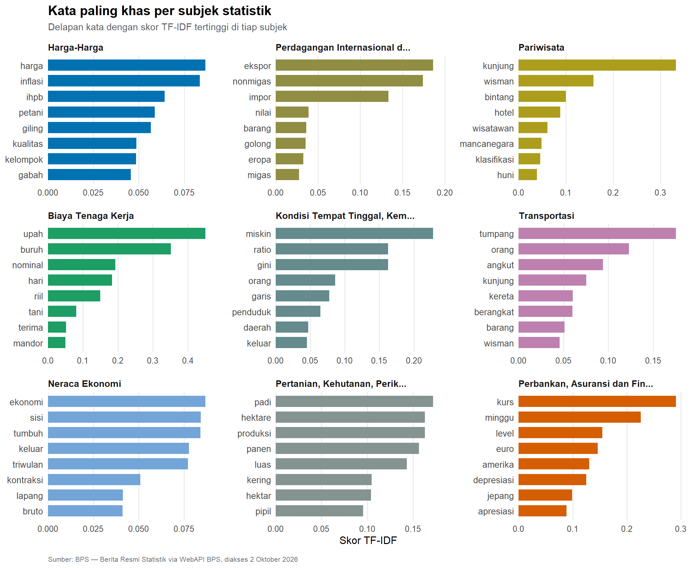

Bahasa Statistik Resmi
Apa yang diberitakan BPS, dan bagaimana ia menuliskannya — 1.121 Berita Resmi Statistik, 2015–2025
Setiap bulan BPS menerbitkan Berita Resmi Statistik — rilis resmi yang jadi pintu utama angka statistik nasional masuk ke ruang publik. Proyek ini tidak menganalisis angkanya, melainkan teksnya: apa yang dipilih BPS untuk diberitakan, kata apa yang dipakainya, dan bagaimana subjek-subjek itu tersusun.
1,121
Dokumen BRS, 2015–2025
22
Subjek statistik (CSA v1.1)
89.5%
Berasal dari domain Ekonomi
1.69×
Kabar naik dibanding turun
Tiga temuan
Hampir sembilan dari sepuluh BRS adalah statistik ekonomi. Statistik demografi dan sosial — kemiskinan, ketenagakerjaan, gender, pendidikan — hanya mengisi sebagian kecil. Apa yang rutin dikomunikasikan BPS ke publik jauh lebih sempit daripada apa yang diukurnya.
BPS menuliskan kenaikan hampir dua kali lebih sering daripada penurunan. Rasionya 1.69 banding satu, konsisten di hampir seluruh periode.
Bahasa BRS adalah bahasa template. Dari ratusan ribu kata, kosakata uniknya hanya ratusan. Kalimat-kalimatnya berulang nyaris identik dari bulan ke bulan, yang membuat frekuensi kata mentah nyaris tak berguna dan menuntut pembobotan TF-IDF untuk melihat apa yang sebenarnya membedakan tiap subjek.
Teks
Kata yang paling sering muncul
Diagram batang dipilih di sini, bukan word cloud. Keduanya mengkodekan besaran yang sama, tetapi batang memakai posisi dan panjang, sedangkan awan kata memakai luas area dan ukuran huruf. Dalam hierarki ketepatan persepsi Cleveland–McGill, posisi pada skala bersama adalah saluran paling akurat dan luas area termasuk yang paling tidak akurat. Awan kata juga menyulitkan pembandingan dua kata yang berdekatan nilainya, dan panjang kata ikut memengaruhi kesan besarnya.
Kata yang paling khas tiap subjek

TF-IDF memberi bobot tinggi pada kata yang sering muncul di satu subjek tetapi jarang di subjek lain. Tiap subjek diberi panel sendiri — bukan satu diagram gabungan — karena yang ingin dibandingkan adalah peringkat di dalam subjek, bukan besaran antar subjek. Skor TF-IDF antar subjek pun tidak sebanding besarannya, sehingga menumpuknya dalam satu sumbu justru menyesatkan. Panel kecil juga membuat sumbu-y tiap subjek bisa berisi kata yang berbeda, yang mustahil pada satu diagram tunggal.
Hasilnya memperlihatkan sesuatu yang tidak terlihat pada frekuensi mentah: tiap subjek punya kosakata teknisnya sendiri yang nyaris tidak dipakai subjek lain. Pariwisata hidup di wisman, penghunian, dan bintang; Pertanian di hektare, panen, dan pipilan — satuan dan istilah teknis pengukuran padi. Kemiskinan dikenali dari gini dan garis, dua konsep pengukuran, bukan dari kata bermuatan emosi seperti “miskin” atau “sulit”. Pola yang sama berulang di seluruh panel: yang membedakan subjek BPS satu sama lain adalah alat ukurnya, bukan pokok persoalannya.
Arah yang dilaporkan
Garis “Naik” berada di atas “Turun” di sepanjang periode, tetapi jaraknya tidak tetap. Jarak itulah yang informatif, dan lebih mudah dibaca bila dijadikan rasio.
Rasio ini berperilaku seperti indeks sentimen, meski BPS tidak merancangnya demikian. Ada dua lembah dan dua puncak. Lembah pertama di 2015–2016 bertepatan dengan periode pelemahan harga komoditas dan pertumbuhan ekonomi Indonesia yang saat itu terendah sejak 2009. Lembah kedua, titik terendah seluruh rangkaian, jatuh pada 2020 — rasionya nyaris satu banding satu, artinya BPS hampir sama seringnya melaporkan penurunan dan kenaikan. Puncaknya muncul di 2022 pada 2,73 : 1, saat pemulihan pascapandemi berjalan.
Perlu ditegaskan: ini bukan menunjukkan BPS memilih nada. Kata arah di BRS melekat pada angka yang dilaporkan, sehingga rasio ini memantulkan keadaan ekonomi yang diukur, bukan sikap penulisnya. Yang menarik justru karena itu — teks rilis statistik ternyata membawa jejak siklus ekonomi yang bisa dilacak tanpa menyentuh satu pun angkanya.
Krisis yang tidak disebut namanya
| Kata | 2020 | 2021 | 2022 | 2023 |
|---|---|---|---|---|
| covid | 6 | 10 | 10 | 10 |
| pandemi | 1 | 0 | 0 | 4 |
| ppkm | 0 | 0 | 0 | 1 |
| pembatasan | 0 | 0 | 0 | 1 |
Sepanjang 2020 BPS menerbitkan 97 Berita Resmi Statistik. Di seluruh teks itu, kata pandemi muncul satu kali dan covid enam kali. Bandingkan dengan grafik di atas: pada tahun yang sama, rasio arah jatuh ke titik terendah sebelas tahun.
Jejak pandemi di korpus ini ada pada angkanya, bukan pada kosakatanya. BPS tidak menamai krisis; ia melaporkan ekspor yang turun, kunjungan wisatawan yang anjlok, dan pengangguran yang naik. Ini sifat bahasa statistik resmi yang jarang disadari: registernya menahan diri dari penamaan peristiwa, dan menyerahkan seluruh beban makna kepada angka. Bagi pembaca umum, itu berarti rilis BPS menuntut konteks dari luar untuk dipahami — sebuah keterbatasan komunikasi, bukan keterbatasan data.
Telusuri dokumennya
Kotak pencarian menyaring seluruh 1.121 judul secara langsung, dan penyaring di kiri membatasi domain serta periode terbit.
Jaringan ko-okurensi
Dua kata dihubungkan bila keduanya muncul bersebelahan dalam satu dokumen setelah penyaringan kata fungsi. Bobot sisi adalah banyaknya kemunculan pasangan itu di seluruh korpus. Ukuran simpul mengkodekan kekuatan (jumlah bobot sisi yang melekat), warna mengkodekan komunitas hasil algoritma Louvain.
232 sisi, 143 simpul.
481 sisi, 233 simpul — lebih padat, struktur tepi lebih terlihat.
76 sisi, 59 simpul — hanya pasangan paling baku yang tersisa.
Klik satu simpul untuk menyorot tetangganya, atau pakai kotak pencarian di atas grafik. Berpindah tab mengubah ambang bobot sisi. Sumber: BPS — Berita Resmi Statistik via WebAPI BPS, diakses 2 Oktober 2026.
Struktur yang muncul bukan kebetulan. Simpul terbesar adalah naik dan turun, dan keduanya terhubung ke hampir semua kelompok lain — persis seperti dugaan dari rasio arah tadi: kata arah adalah tulang punggung kalimat BRS, dan tiap subjek hanya menempelkan istilah teknisnya sendiri di sekelilingnya.
Komunitas yang terbentuk ternyata memetakan subjek statistik tanpa pernah diberi tahu subjeknya. Terlihat gugus gabah–kualitas–giling–beras untuk survei harga produsen padi, kunjung–wisman untuk pariwisata, upah–nominal–buruh–tani untuk biaya tenaga kerja, dan ekspor–nonmigas–impor untuk perdagangan internasional. Algoritma Louvain bekerja murni dari pola kemunculan kata bersebelahan, namun kelompok yang dihasilkannya sejajar dengan taksonomi CSA pada bagian berikut. Itu petunjuk kuat bahwa tiap subjek BRS punya rumus kalimatnya sendiri yang nyaris tidak berubah antar rilis — sifat templatik korpus yang tadi terlihat dari rendahnya keragaman kosakata, kini tampak sebagai struktur.
Representasi kedua: matriks ketetanggaan
Baris dan kolom diurutkan menurut komunitas, sehingga blok pekat di sepanjang diagonal menandai kelompok kata yang saling terikat. Matriks tidak menderita tumpang tindih simpul seperti grafik node-link, sehingga pasangan lemah tetap terbaca — itu sebabnya dua representasi ini saling melengkapi. Sumber: BPS — Berita Resmi Statistik via WebAPI BPS, diakses 2 Oktober 2026.
Blok diagonal yang rapi mengonfirmasi apa yang terlihat di grafik jaringan: kata-kata BRS mengelompok ketat per subjek dan jarang menyeberang. Dua baris yang justru tidak membentuk blok adalah naik dan turun — keduanya berwarna di hampir seluruh kolom. Itu gambaran paling ringkas dari temuan proyek ini: kosakata teknis BPS terpisah-pisah menurut subjek, tetapi kata arah dipakai bersama oleh semuanya.
Hierarki subjek
BPS menggolongkan subjek statistiknya menurut Classification of Statistical Activities (CSA) v1.1, klasifikasi internasional yang dikelola UNECE. Nilai subj_id pada WebAPI ternyata mengikuti urutan kode CSA, sehingga hierarki empat tingkat — Domain, Divisi, Subjek, Dokumen — dapat direkonstruksi persis dan bukan hasil pengelompokan sendiri.
Ukuran mengkodekan jumlah dokumen, warna mengkodekan rata-rata panjang dokumen — dua variabel berbeda. Klik sebuah wilayah untuk menelusuri ke tingkat di bawahnya; treemap menampilkan jejak navigasi di bagian atas sehingga posisi penelusuran selalu terlihat.
Yang langsung terlihat adalah ketimpangannya. Satu divisi — Harga — menempati hampir seperempat seluruh korpus sendirian, karena rilis inflasi, Nilai Tukar Petani, dan harga produsen terbit setiap bulan tanpa putus. Sementara itu seluruh Domain 1, yang memuat kemiskinan, ketenagakerjaan, pendidikan, dan gender, memerah menjadi sebaris kotak kecil di tepi. Frekuensi terbit mengikuti frekuensi pengukuran, bukan bobot persoalannya: statistik harga diukur bulanan sehingga dirilis bulanan, sementara kemiskinan diukur dua kali setahun dan ketenagakerjaan dua kali setahun.
Warna membawa lapisan kedua. Perhatikan bahwa subjek dengan dokumen paling banyak justru cenderung berwarna gelap, yaitu abstraknya pendek: rilis rutin bulanan ditulis ringkas dan berpola, sedangkan rilis yang jarang muncul — sensus, survei khusus, indeks tahunan — ditulis jauh lebih panjang. Ada pertukaran antara rutinitas dan kedalaman di dalam cara BPS berkomunikasi.
Satu lagi yang hanya terlihat dari hierarki: kode CSA 2.4.2, Energi, tidak pernah sekali pun muncul sepanjang sebelas tahun. Ada subjek yang punya tempat resmi di klasifikasi tetapi tidak pernah diisi sebagai Berita Resmi Statistik.
Catatan data dan keterbatasan
Sumber. Berita Resmi Statistik, Badan Pusat Statistik, domain nasional (kode 0000), tahun terbit 2015–2025, diambil melalui WebAPI BPS pada 2 Oktober 2026. Seluruh 1.121 dokumen yang dikembalikan API dipakai, tidak ada yang dibuang.
Artefak markup. Abstrak BRS disimpan sebagai HTML hasil ekspor Microsoft Word. Penghapusan tag dapat menyambung kata antar paragraf atau membelah kata yang terpotong tag inline. Pembersihan membedakan tag blok dan tag inline untuk menekan keduanya, namun sisa kesalahan kecil masih mungkin ada.
Salah ketik pada sumber. Korpus mengandung salah ketik asli dari BPS seperti febuari dan okober. Penyaringan frekuensi minimum lima kemunculan membuang sebagian besarnya, dengan konsekuensi kata langka yang sahih ikut terbuang.
Keterbatasan stemmer. Algoritma Nazief & Andriani tidak mengenali nama diri, sehingga tanpa penanganan khusus Bali menjadi bal dan ASEAN menjadi ase. Daftar istilah terlindungi berisi nama wilayah, negara, dan akronim disusun untuk mengatasinya, tetapi daftar itu tidak dijamin lengkap.
Dokumen tanpa subjek. Sebelas dokumen tidak membawa subj_id dari API dan diberi label Tidak Berkategori alih-alih dibuang, agar jumlah korpus tetap utuh.
Daftar stopword tidak netral. Daftar stopword baku Bahasa Indonesia yang umum dipakai membuang kata naik, tinggi, besar, dan kecil, tetapi membiarkan turun, rendah, dan tumbuh. Pada korpus yang isinya laporan perubahan angka, ketimpangan itu membalik kesimpulan: tanpa koreksi, data seolah menunjukkan BPS lebih sering melaporkan penurunan. Lima belas kata arah dan besaran karena itu dikembalikan secara eksplisit. Daftar stopword disusun untuk teks umum, bukan untuk laporan statistik, dan pemakaiannya tanpa pemeriksaan adalah sumber kesalahan yang mudah luput.
Cakupan. Analisis terbatas pada judul dan abstrak, bukan isi penuh PDF rilis. Kesimpulan berlaku untuk apa yang BPS ringkaskan di muka, bukan untuk keseluruhan isi tiap rilis.